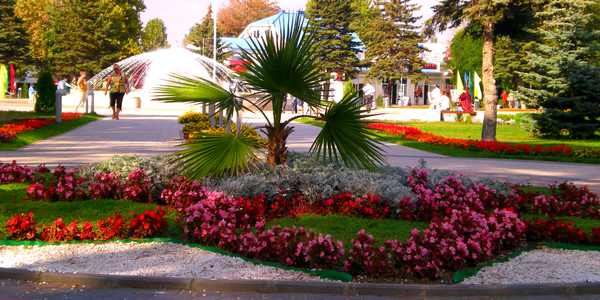

Добро пожаловать на сайт!
Гостевой дом «Роман» находится в самом центре города Анапа, в курортной зоне. Это позволяет нашим гостям наслаждаться всеми радостями летнего отдыха. Выгодное расположение гостевого дома обуславливается его близостью к 2 видам пляжа — песчаному (центральному) и галечному (до 10 мин ходьбы). Дорога к галечному пляжу лежит через уютный благоустроенный парк, в котором расположен питьевой бювет с минеральной водой, источники которой находятся в Анапском районе. На пути к песчаному расположен продуктовый рынок (где можно купить южные фрукты), палатки с сувенирами и кафе на любой вкус, где можно как поесть днем, так и вечером отдохнуть под живую музыку.
Поблизости находится аквапарк, детский аквапарк, центральная площадь города Театральная (где летом в вечернее время часто дают бесплатные концерты под открытым небом, как местные художественные коллективы, так и звезды российской эстрады), рядом с центральным пляжем находится единственный на побережье Чёрного моря водный стадион для катания на водных лыжах и доске «вейкборде», летняя эстрада, морской аквариум, дайвинг-клуб и яхт-клуб.
В 10 минутах ходьбы находится санаторно-оздоровительные комплексы «ДиЛуч» и «БФО», где можно приобрести курсовки на лечение.
Через дорогу от гостевого дома — круглосуточный магазин, аптека, магазин местного вина. Рядом с домом расположена недорогая столовая, где можно недорого и вкусно пообедать. Так же рядом находится парикмахерская и интернет-клуб, пейнтбол, боулинг-клуб, детская и спортивная площадки (бесплатные тренажеры).

Аллея и фонтан перед Администрацией Анапы
Услуги гостевого дома «Роман»
Услуги, входящие в стоимость
- Проживание в номере
- Телевизор, спутниковое ТВ
- Общая кухня, холодильник
- Кондиционер
- Видеонаблюдение и охрана
- Гладильная доска и утюг, пылесос
- Библиотека
- Настольный теннис
- Автостоянка
- Медпункт
- Зеленый двор, беседка
- Смена белья (через 7 дней)
- Скандинавская ходьба
- Детская площадка
- Чаепития на свежем морском воздухе
Дополнительные услуги
- Трансфер (встреча и проводы) не дорого
- Экскурсии по городу
- Лечение, массаж, дельфинотерапия
- Детская игровая комната, зимний бассейн, сауна
- Морские прогулки на яхтах, катерах
- Дайвинг, полеты на парашюте
- Фотосесии у моря
- Морская и речная рыбалка
- Поездки по живописным местам
- Доставка цветов, услуга доставки
- Интернет, Wi-Fi не дорого
- Парк игровых автоматов для детей
- Бронирование и доставка билетов в цирк и концертные залы
Рядом работают прокаты велосипедов, роликов и скутеров.
В распоряжении отдыхающих имеется отдельная кухня для приготовления и приёма пищи со всем необходимым набором посуды и оборудования. На территории гостевого дома благоустроенный зелёный дворик со столикам для отдыха, шезлонгами для принятия солнечными ванн.
Платные услуги:
Принимаются заявки на трансфер (встречу и проводы на вокзалах в Анапе и на ж/д вокзале Тоннельной) недорого.
Желающие могут пройти санаторно-курортное лечение в санатории, получить услуги лечебно-косметологического центра, пройти курс массажа, купить билеты на экскурсии.